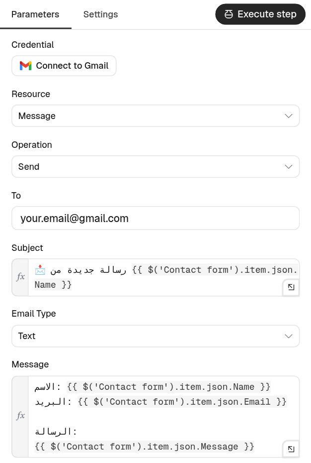
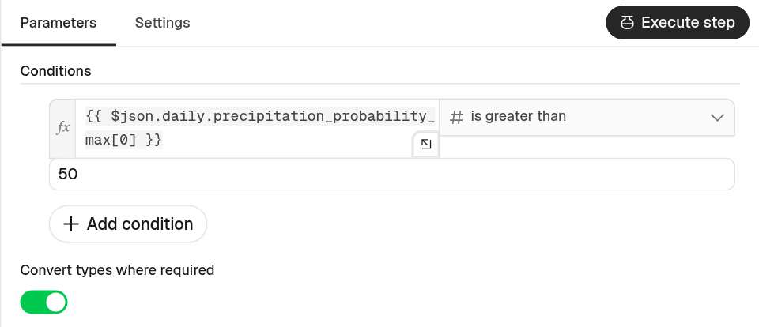
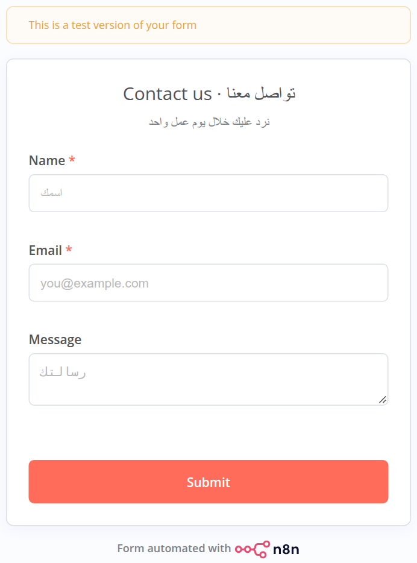
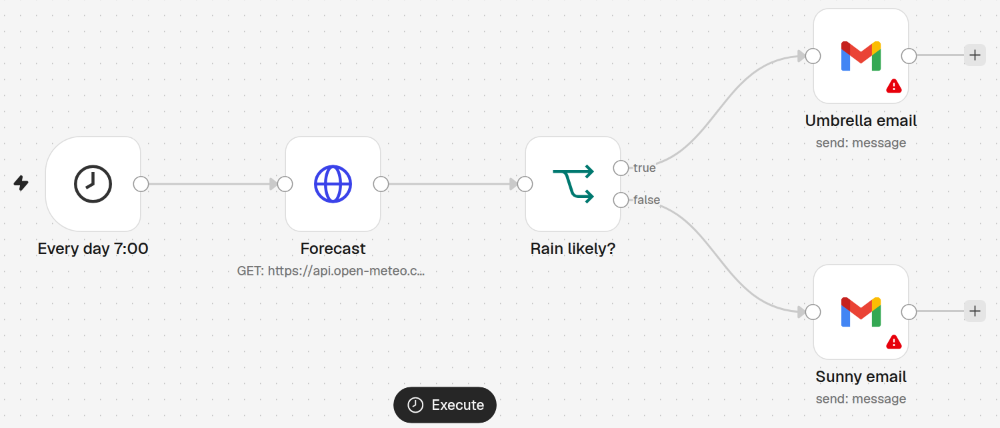
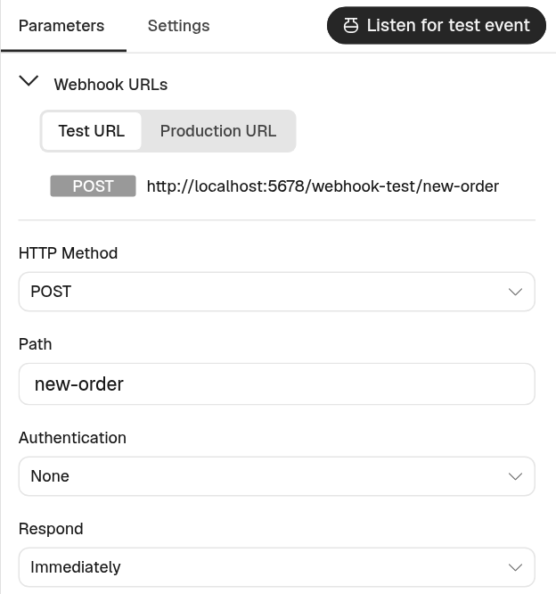
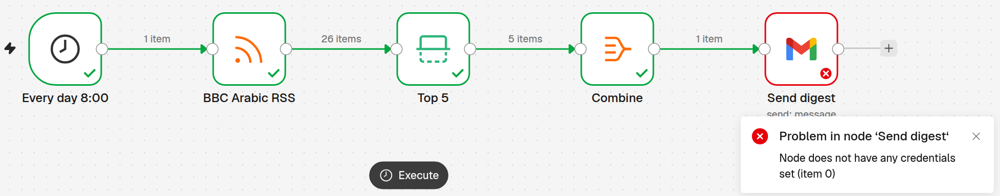
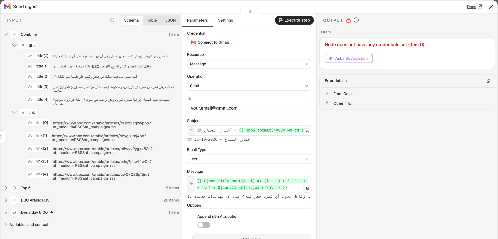
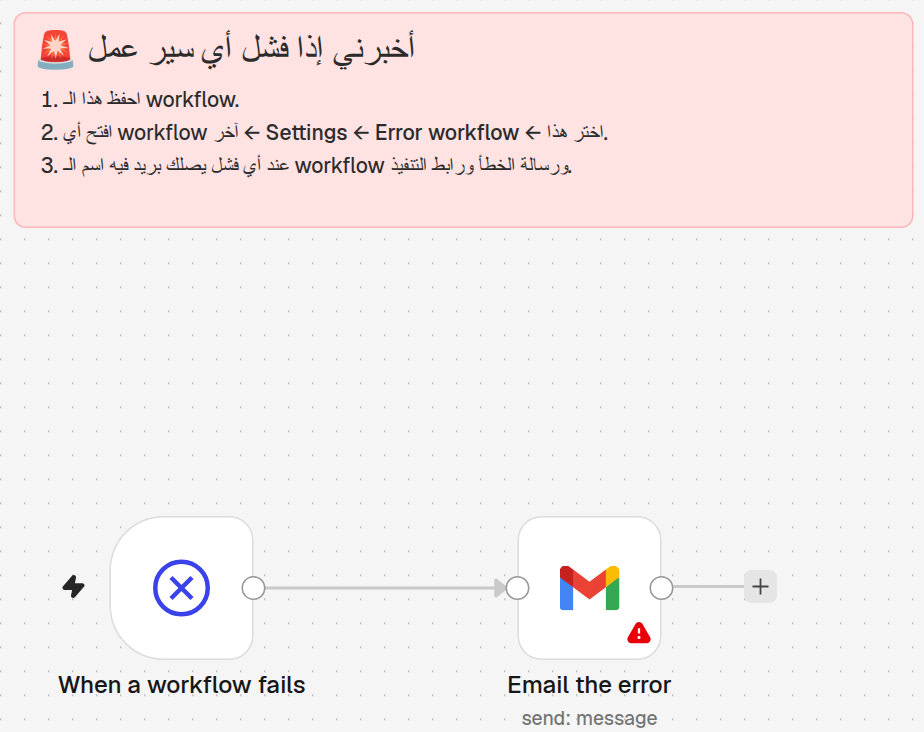

سير عمل جاهزة للتجربة — خمس أتمتة حقيقية تأخذها معك
⏱ 3 ساعات🧑🏫 Beginner · مبتدئ🧪 Lab 3 · 5 flows🔑 حساب Google
أهلاً بكم في الحصة الثالثة! في الحصتين السابقتين تعرّفنا على الأتمتة وعلى محرّر n8n: كيف نضيف عقدة، وكيف نشغّل، وكيف نقرأ البيانات. اليوم يوم ممتع جداً لأننا سنبني أشياء حقيقية تعمل في حياتكم: نموذج تواصل، بريد طقس صباحي، تنبيه للطلبات الكبيرة، ملخص أخبار، وجهاز إنذار للأخطاء. كل واحدة منها ملف جاهز تستوردونه ثم تغيّرونه على ذوقكم. قبل أن نبدأ: هل الجميع لديه حساب n8n Cloud يعمل وحساب Gmail؟ ارفعوا أيديكم إذا كان عندكم الاثنان. من ليس عنده، سأساعده في أول عشر دقائق.
RECAP · CLASS 2
Where We Are
أين وصلنا؟ تذكير سريع بما تعلّمناه
▶️
التشغيل للتجربةExecute workflow
زر في أسفل اللوحة يشغّل الوصفة الآن لنرى النتيجة.
🔍
ماذا دخل وماذا خرجINPUT · OUTPUT
افتح أي عقدة لترى البيانات قبلها وبعدها.
🧩
التعبيراتExpressions
{{ $json.x }} تأخذ قيمة من العقدة السابقة.
🌐
طلب ويبHTTP Request
«النادل» الذي يجلب البيانات من أي API.
🎯 اليومنضيف المفاتيح 🔑 والقرارات 🔀، ثم نبني 5 أتمتة حقيقية ونتعلّم ماذا نفعل عند الخطأ.
لنتذكر بسرعة. من يذكر ماذا يفعل زر Execute workflow؟ نعم، يشغّل سير العمل الآن للتجربة. وعندما نفتح أي عقدة نرى ثلاثة أجزاء: INPUT على اليسار أي ما دخل، والإعدادات في الوسط، وOUTPUT على اليمين أي ما خرج. وتعلّمنا التعبيرات بين القوسين المزدوجين، مثل $json.x، لنأخذ قيمة من عقدة سابقة. وتعلّمنا عقدة HTTP Request، النادل الذي يذهب للمطبخ ويعود بالطلب. اليوم سنضيف شيئين جديدين: المفاتيح لنربط حساباتنا مثل Gmail، والقرارات لنجعل الأتمتة تختار طريقها. ثم نطبّق كل هذا على خمس أتمتة حقيقية.
TODAY'S GOAL
5 Real Flows You Can Reuse
هدف اليوم: خمس أتمتة حقيقية تعيد استخدامها
📝
1نموذج تواصلForm → Sheet → Email
كل رسالة تُحفظ في جدول وتصلك.
☔
2بريد الطقسDaily weather
هل آخذ المظلة اليوم؟
🔔
3تنبيه الطلباتWebhook alert
طلب كبير؟ نبّهني فوراً.
📰
4ملخص الأخبارNews digest
أهم 5 أخبار في بريد واحد كل صباح.
🚨
5إنذار الأخطاءError alert
إذا فشل شيء، تعرف فوراً.
📁 lab/كل واحدة ملف JSON جاهز: تستورده ← تربط حسابك ← تشغّله ← ثم تغيّره على ذوقك.
هذه هي الأتمتة الخمس التي سنخرج بها اليوم. الأولى نموذج تواصل: أي شخص يملأ النموذج، تُحفظ رسالته في جدول Google وتصلك على بريدك. الثانية بريد طقس كل صباح يخبرك هل تأخذ المظلة. الثالثة تنبيه عندما يصل طلب كبير من متجرك. الرابعة ملخص لأهم خمسة أخبار في رسالة واحدة. والخامسة جهاز إنذار يخبرك إذا فشلت أي أتمتة. سؤال للقاعة: أيّ واحدة منها تحتاجونها في عملكم أكثر؟ لا تقلقوا، لن نبنيها من الصفر؛ كلها ملفات جاهزة ومجرّبة. دوركم أن تفهموا كل عقدة، ثم تغيّروا شيئاً فيها لتصبح لكم.
AGENDA
Today's Map
خريطة الحصة: من المفاتيح إلى التطبيق
🔑Credentialsالمفاتيح
🔀Logicالقرارات
🧪5 Flowsخمس أتمتة
🩺Errorsعند الخطأ
✅Habitsعادات جيدة
🧑💻Lab 3دورك!
☕استراحة 15 دقيقة في المنتصف. وبعد كل أتمتة نجرّبها معاً على أجهزتكم.
هذه خريطة اليوم، وهي نفسها مرسومة كسير عمل من اليسار لليمين كما في n8n. نبدأ بالمفاتيح: كيف نربط حساب Google مرة واحدة. ثم عُقد القرار: كيف تختار الأتمتة طريقها. ثم الجزء الأكبر: الأتمتة الخمس، وبعد كل واحدة نجرّبها معاً. بعد ذلك نتعلّم كيف نقرأ الأخطاء ونصلحها دون خوف، ثم عادات جيدة للمبتدئين، وأخيراً وقت التطبيق الحر والتحديات. هناك استراحة خمس عشرة دقيقة في المنتصف. نصيحة: إذا تأخّر جهازك أو ظهر خطأ، لا تقلق، اكتب ملاحظة وسنعود له في وقت التطبيق.
PART 1 · CREDENTIALS
Credentials = Keys on a Keyring
بيانات الاعتماد: مفاتيح على ميدالية واحدة
من حياتنا🗝️
ميدالية المفاتيح
لكل باب مفتاح. تعلّقه مرة واحدة، وتستعمله كل يوم دون أن تصنعه من جديد.
=
في التقنية🔐
Credentials
تربط حسابك بـ n8n مرة واحدة، وكل عقدة Gmail تختار نفس المفتاح.
📍 أين؟القائمة الجانبية ← Overview ← Credentials: كل مفاتيحك محفوظة ومشفّرة في مكان واحد.
تخيّلوا ميدالية المفاتيح في جيبكم: مفتاح البيت، مفتاح السيارة، مفتاح المكتب. لم تصنعوا المفتاح كل صباح؛ صنعتموه مرة واحدة وعلّقتموه. هذا بالضبط ما تسمّيه n8n بيانات الاعتماد، أو Credentials. عندما نريد من n8n أن يرسل بريداً من Gmail، يحتاج إذناً منكم، أي مفتاحاً. نصنع هذا المفتاح مرة واحدة، ثم أي عقدة Gmail في أي سير عمل تختاره من القائمة. سؤال: لو عندكم عشر أتمتة كلها ترسل بريداً، كم مرة نربط حساب Gmail؟ صحيح، مرة واحدة فقط. وكل المفاتيح تجدونها في القائمة الجانبية تحت Overview ثم Credentials.
CREDENTIALS · GOOGLE
Sign in with Google
ربط Gmail و Google Sheets بضغطة زر
افتح عقدة Gmail ← حقل Credential.
اضغط Connect to Gmail ثم Sign in with Google.
اختر حسابك واضغط Allow (سماح).
يظهر Account connected ✅ — المفتاح جاهز.
📊Google Sheets تحتاج مفتاحها الخاص بنفس الخطوات. على n8n Cloud لا يلزم أي إعداد في Google Cloud.

عقدة Notify me
لنرَ كيف نصنع المفتاح عملياً. سأعرض على الشاشة الآن. أفتح عقدة Gmail، في الأعلى حقل اسمه Credential، وفيه زر Connect to Gmail. أضغطه، فتظهر نافذة فيها زر Sign in with Google. أختار حسابي، وتسألني Google: هل تسمح لـ n8n بإرسال البريد؟ أضغط Allow. ترجع النافذة وتقول Account connected. انتهينا! لاحظوا أننا لم ننسخ أي كلمة سر. هذه الطريقة اسمها OAuth، ومعناها أن Google يعطي n8n تصريحاً محدوداً دون أن يعرف كلمة سرك. لـ Google Sheets مفتاح منفصل بنفس الخطوات. ملاحظة: على n8n Cloud الأمر سهل هكذا، أما على جهازك الخاص فيحتاج إعداداً أطول، ولهذا نستخدم Cloud.
CREDENTIALS · SAFETY
Keep Your Keys Safe
نصائح الأمان: مفاتيحك أمانة
🙋
حساباتك أنت فقط
لا تربط حساب شخص آخر دون إذنه.
🚫
لا كلمات سر في الحقول
لا تكتب كلمة سر أو مفتاحاً في عقدة أو ملاحظة.
📤
مشاركة الملف آمنة
ملف JSON المُصدَّر لا يحمل مفاتيحك السرية.
📸
انتبه لصور الشاشة
لا تنشر صورة يظهر فيها مفتاح أو رمز سري.
🧪
جرّب على نفسك أولاً
أرسل البريد لنفسك قبل أي زبون.
🧹
تستطيع سحب الإذن
حساب Google ← Security ← التطبيقات المتصلة.
المفتاح يفتح بريدكم، لذلك نتعامل معه بحذر. أولاً: اربطوا حساباتكم أنتم فقط. ثانياً: لا تكتبوا أي كلمة سر أو مفتاح داخل حقل عادي أو داخل ملاحظة لاصقة؛ مكانه الوحيد هو Credentials. ثالثاً خبر جميل: عندما تشاركون ملف JSON مع زميل، مفاتيحكم لا تنتقل معه، فقط اسم المفتاح؛ وزميلك يربط حسابه هو. رابعاً: انتبهوا عند تصوير الشاشة. خامساً: جرّبوا دائماً بإرسال البريد لأنفسكم. وأخيراً: إذا أردتم إلغاء الإذن، من حساب Google، قسم الأمان، التطبيقات المتصلة. سؤال: أين نضع مفتاح API إذا احتجناه؟ صحيح، في Credentials.
VIDEO · 52 SEC
API Keys = Your Membership Card
فيديو: المفتاح = بطاقة العضوية
👀 ماذا يحدث لو نسخ أحدهم بطاقتك؟
المفتاح مثل بطاقة النادي: تفتح الباب لك وحدك. n8n يحفظه في Credentials. اسألوا: أين لا نضع المفتاح أبداً؟ في رسالة أو صورة شاشة أو مجموعة. وإذا تسرّب نلغيه وننشئ جديداً مثل بطاقة ضائعة.
PART 2 · LOGIC NODES
Nodes That Decide
عُقد تتخذ القرار — مثل قراراتك اليومية
🔀
مفترق الطرقIF
سؤال جوابه نعم أو لا ← طريقان: true أو false.
📮
فرز البريدSwitch
رفوف كثيرة: كل عنصر يذهب لرفّه حسب القاعدة.
🥅
المصفاةFilter
يمرّر فقط ما يطابق الشرط، والباقي يُحذف.
🔗
نهران في نهرMerge
يجمع بيانات طريقين في طريق واحد.
💡 الفرقIF = طريقان فقط · Switch = طرق كثيرة · Filter = لا طرق، يمرّ أو يُحذف.
الأتمتة الذكية تقرّر. وقراراتها تشبه قراراتنا اليومية. IF مثل مفترق طرق: هل تمطر؟ نعم، أذهب يميناً؛ لا، أذهب يساراً. دائماً طريقان فقط: true وfalse. Switch مثل موظف فرز البريد في مكتب البريد: أمامه رفوف كثيرة، وكل رسالة يضعها في رفّها: المبيعات، الدعم، المحاسبة. Filter مثل المصفاة في المطبخ: الماء يسقط والمعكرونة تبقى؛ أي يُبقي فقط ما يطابق الشرط. وMerge مثل نهرين يلتقيان في نهر واحد: بيانات من طريقين تصبح في طريق واحد. سؤال: إذا أردت ثلاثة طرق، هل أستخدم IF أم Switch؟ صحيح، Switch.
PART 2 · LOGIC NODES
Nodes for Many Items
عُقد للتعامل مع عناصر كثيرة
📚
رزمة أوراقLoop Over Items
بضع ورقات في كل مرة حتى تنتهي.
اسمها القديم: Split in Batches
⏳
المؤقّتWait
توقّف قليلاً ثم أكمل: دقيقة، يوم، أو موعد محدد.
✋
خذ أول NLimit
من 26 خبراً خذ أول 5 فقط.
🧺
سلة واحدةAggregate
يضع كل العناصر في سلة واحدة ← عنصر واحد.
📦 تذكّرالبيانات تمشي على شكل عناصر (Items)، وكل عقدة تعمل على كل عنصر يدخلها.
المجموعة الثانية تتعامل مع الكثرة. Loop Over Items، واسمها القديم Split in Batches، مثل رزمة أوراق كبيرة على مكتبك: لا تنجزها مرة واحدة، بل خمس أوراق ثم خمس حتى تنتهي؛ مفيدة عندما ترسل لخمسمئة عميل ولا تريد إزعاج الخدمة. Wait هي المؤقّت: انتظر يومين ثم أرسل تذكيراً. Limit تعني خذ أول عدد معيّن فقط، كأن تقول: من كل الأخبار أريد أول خمسة. وAggregate مثل سلة التسوق: بدل خمس حبات منفصلة، نضعها في سلة واحدة فتصبح عنصراً واحداً؛ وهذا مفيد عندما نريد بريداً واحداً بدل خمس رسائل. سنرى Limit وAggregate يعملان فعلاً في الأتمتة الرابعة.
LOGIC · IF
Inside the IF Node
عقدة IF من الداخل: سؤال واحد، طريقان
القيمة: تعبير يأخذ احتمال المطر من العقدة السابقة.
المقارنة: is greater than = أكبر من.
الرقم: 50 ← «هل الاحتمال أكبر من 50٪؟»
نعم ← مخرج true ✅ · لا ← مخرج false ❌
Add condition لإضافة شرط ثانٍ.

عقدة Rain likely? في الأتمتة الثانية
لنفتح عقدة IF حقيقية من الأتمتة الثانية، اسمها Rain likely، أي هل المطر محتمل. الشرط مكوّن من ثلاثة أجزاء، مثل جملة: القيمة، ثم المقارنة، ثم الرقم. القيمة هنا تعبير يأخذ احتمال المطر من نتيجة الطقس. المقارنة is greater than أي أكبر من. والرقم خمسون. فالجملة تصبح: هل احتمال المطر أكبر من خمسين؟ إذا نعم، يخرج العنصر من باب true، وإذا لا، من باب false. ويمكن إضافة شرط ثانٍ بزر Add condition، ونختار بينهما AND أي الاثنان معاً، أو OR أي أحدهما يكفي. سؤال: كيف أجعلها أكثر حذراً فتنبّهني حتى لو الاحتمال 30؟ نغيّر الرقم إلى 30.
VIDEO · 55 SEC
IF = A Road Fork
فيديو: IF = مفترق طرق
👀 كل عنصر يسلك طريقاً واحداً — أيّ طريق؟
IF مفترق طرق: الشرط صحيح ← true، غير صحيح ← false. Switch فرّاز بريد بعدة صناديق. اسألوا: احتمال مطر 50 بالضبط والشرط أكبر من 50، أين يذهب؟ false.
QUICK QUIZ
Which Node Would You Use?
اختبار سريع: أي عقدة تختار؟
أريد فقط الطلبات القادمة من مدينة عمّان.
رسالة للمبيعات، وأخرى للدعم، وثالثة للمحاسبة.
عندي 500 عميل: أرسل لهم 10 في كل دفعة.
انتظر يومين، ثم أرسل تذكيراً.
اجمع أسماء كل الطلاب في رسالة واحدة.
IFSwitchFilterMergeLoop Over ItemsWaitLimitAggregate
وقت لعبة سريعة! سأقرأ كل حالة، وأنتم تقولون اسم العقدة بصوت عالٍ. الإجابات: الأولى Filter، لأننا نُبقي طلبات عمّان فقط ونحذف الباقي؛ ويمكن IF أيضاً إذا أردنا فعل شيء مع الباقي. الثانية Switch، لأن عندنا ثلاثة طرق وليس طريقين. الثالثة Loop Over Items، رزمة الأوراق: عشرة في كل مرة. الرابعة Wait، المؤقّت. والخامسة Aggregate، السلة الواحدة. من أجاب الخمسة صحيحة؟ ممتاز! لا تقلقوا إن أخطأتم؛ المهم أن تعرفوا أن هذه العقد موجودة، وعند الحاجة تبحثون عنها في لوحة العقد بزر الزائد.
PART 3
5 Flows You Can Try
خمس أتمتة جاهزة — جرّبها، ثم غيّرها لتصبح لك
الآن الجزء الأهم. لكل أتمتة سنمشي بنفس الترتيب: أولاً القصة، أي المشكلة بكلمات بسيطة. ثانياً الرسم، أي العقد وكيف تتصل. ثالثاً ماذا تفعل كل عقدة. ورابعاً تحدٍّ صغير: غيّر شيئاً واحداً. بعد كل أتمتة أعرضها على شاشتي، تستوردونها أنتم وتشغّلونها معي. الملفات في مجلد lab، والتعليمات خطوة بخطوة في ملف lab.html. وإذا تأخّر أحدكم، فلا مشكلة: سيكون هناك وقت للتطبيق في آخر الحصة. جاهزون؟ لنبدأ بالأولى، وهي الأكثر استخداماً في المشاريع الصغيرة.
FLOW 1 · FORM → SHEET → EMAIL
The Contact Form
القصة: رسائل الزبائن تضيع!
«زبائني يرسلون أسئلتهم على الواتساب والإنستغرام وعلى الورق… وبعضها يضيع.» الحل: نموذج واحد ← كل رسالة تُحفظ في جدول ← وتصلني على بريدي فوراً.
📝Contact formنموذج ويب
📊Save to sheetسطر جديد في الجدول
📧Notify meبريد لي
مُشغِّل Triggerبيانات Dataإجراء Action
تخيّلوا سارة، عندها مشروع حلويات صغير. الزبائن يرسلون لها على الواتساب، والإنستغرام، وأحياناً يتصلون، وبعض الرسائل تضيع. الحل ثلاث عقد فقط. الأولى نموذج ويب يصنعه n8n لكم برابط جاهز، بلا برمجة وبلا موقع. الثانية تحفظ كل رد كسطر جديد في جدول Google Sheets، فيصبح عندكم سجل بكل الرسائل. والثالثة ترسل لكم بريداً فورياً فيه الاسم والرسالة. لاحظوا الألوان: البرتقالي هو المُشغِّل، أي الحدث الذي يبدأ كل شيء، وهنا هو: شخص ضغط إرسال في النموذج. سؤال: أين يمكن أن تستخدموا هذا النموذج غير الزبائن؟ تسجيل في دورة، طلب إجازة، استبيان…
FLOW 1 · WHAT EACH NODE DOES
A Real Form, Made for You
النموذج الحقيقي الذي يصنعه n8n — وماذا تفعل كل عقدة
Contact form: يصنع صفحة نموذج برابط جاهز، بلا برمجة.
Save to sheet: يضيف كل رد كسطر جديد (Append).
أنشئ جدولاً بأعمدة: NameEmailMessage
Notify me: بريد فيه الاسم والبريد والرسالة.
🎯 غيّرهاأضف حقل «Phone» في النموذج، وعموداً Phone في الجدول.

النموذج كما يراه الزبون
هذا هو النموذج الحقيقي الذي صنعه n8n، بدون أي برمجة. العنوان والوصف والحقول كلها من إعدادات عقدة Contact form. عقدة Save to sheet تضيف سطراً في الجدول، وهي تطابق تلقائياً اسم الحقل مع اسم العمود، لذلك يجب أن تكتبوا في السطر الأول من الجدول: Name وEmail وMessage بنفس الحروف تماماً، والحروف الكبيرة مهمة. قد تظهر أعمدة إضافية مثل submittedAt، وهي وقت الإرسال، وهذا طبيعي. وعقدة Notify me ترسل لكم بريداً. التحدي: أضيفوا حقل هاتف في النموذج وعموداً بنفس الاسم في الجدول، ثم جرّبوا. ملاحظة: عند الضغط على Execute يفتح n8n النموذج في تبويب جديد؛ هذا هو رابط التجربة.
FLOW 2 · SCHEDULE + HTTP + IF
Do I Need an Umbrella?
القصة: بريد الطقس كل صباح
«أنسى أن أنظر إلى الطقس… فأخرج بلا مظلة وأتبلّل!» منبّه ⏰ الساعة 7 ← يسأل عن الطقس ← يقرّر ← يرسل البريد المناسب.
⏰Every day 7:00المنبّه
🌐Forecastيجلب الطقس
🔀Rain likely?مطر > 50٪؟
☔Umbrella emailخذ المظلة
☀️Sunny emailيوم جميل
الأتمتة الثانية لكل من ينسى المظلة. المُشغِّل هنا ليس شخصاً يملأ نموذجاً، بل منبّه: Schedule Trigger، يعمل كل يوم الساعة السابعة صباحاً. العقدة الثانية Forecast هي صديقنا HTTP Request، النادل، يذهب إلى خدمة طقس مجانية اسمها open-meteo ويعود بالتوقعات، ولا تحتاج مفتاحاً. ثم عقدة IF التي رأيناها: هل احتمال المطر أكبر من خمسين؟ إذا نعم، يصلني بريد خذ المظلة؛ وإذا لا، بريد يوم جميل. سؤال مهم: هل يصلني البريدان معاً؟ لا! في كل يوم يعمل طريق واحد فقط. عندما جرّبناها اليوم ذهبت إلى طريق false، أي يوم جميل.
FLOW 2 · ON THE CANVAS
One Day, One Branch
كيف تبدو في n8n — وماذا تفعل كل عقدة
Every day 7:00: Schedule Trigger، المنبّه اليومي.
Forecast: HTTP Request إلى open-meteo — مجاني بلا مفتاح.
Rain likely?: IF يختار الطريق.
الرسالة فيها الاحتمال والحرارة من تعبيرات {{ }}.

المخرجان true و false واضحان على عقدة IF
🎯 غيّرهاضع إحداثيات مدينتك (latitude / longitude)، أو غيّر 50 إلى 30.
هذه الأتمتة على لوحة n8n. لاحظوا عقدة IF وعليها كلمتان صغيرتان: true وfalse، ومن كل واحدة يخرج سلك إلى بريد مختلف. المثلث الأحمر الصغير على عقد Gmail يعني: لا يوجد مفتاح بعد، وهذا ما سنصلحه في التطبيق. عقدة Forecast فيها إحداثيات عمّان: خط العرض 31.95 وخط الطول 35.93. إذا كنتم في مدينة أخرى، ابحثوا في Google عن اسم مدينتكم وكلمة coordinates، وضعوا الرقمين. والرسالة نفسها تستخدم تعبيرات لتكتب الاحتمال ودرجة الحرارة الصغرى والكبرى. تذكير مهم: هذه الأتمتة لن تعمل كل صباح وحدها إلا بعد الضغط على Publish. وللتجربة الآن نضغط Execute workflow.
FLOW 3 · WEBHOOK + IF
The Doorbell: New Order!
القصة: أخبرني فوراً بالطلبات الكبيرة فقط
«متجري يستقبل طلبات كثيرة. لا أريد إزعاجاً لكل طلب صغير.» فقط إذا تجاوز المبلغ 100 ← يصلني تنبيه فوراً 🔔
🔔New orderWebhook · جرس الباب
🔀Big order?amount > 100؟
📧Alert meبريد تنبيه
✏️Small orderملاحظة فقط
الأتمتة الثالثة تستخدم Webhook، وتذكرون التشبيه: جرس الباب. بدل أن أفتح الباب كل خمس دقائق لأرى هل جاء أحد، وهذا اسمه polling، أنتظر حتى يرن الجرس. المتجر أو أي تطبيق آخر يرن الجرس، أي يرسل البيانات إلى رابط خاص، وn8n يفتح فوراً. البيانات هنا طلب فيه اسم العميل والمبلغ. ثم IF يسأل: هل المبلغ أكبر من مئة؟ نعم، يصلني بريد تنبيه. لا، تكتب عقدة Small order ملاحظة فقط: طلب صغير، لا حاجة لتنبيه. جرّبناها بمبلغ 250 فذهبت إلى true، وبمبلغ 40 فذهبت إلى false. سؤال: ما الأنظمة في عملكم التي يمكن أن ترن هذا الجرس؟
FLOW 3 · WEBHOOK URLS
Test URL vs Production URL
رابطان لنفس الجرس: البروفة والعرض الحقيقي
🧪 Test URL — البروفة
يعمل فقط بعد Execute (وهو يستمع)، لمرة واحدة. فيه /webhook-test/
🚀 Production URL — العرض
يعمل دائماً بعد Publish. فيه /webhook/
⚠️ الخطأ الأشهرالإرسال إلى Test URL دون الضغط على Execute أولاً ← خطأ 404.

عقدة New order مفتوحة
افتحوا عقدة New order. في الأعلى ترون Webhook URLs وتبويبين: Test URL وProduction URL. فكّروا بالمسرح: Test URL هو البروفة، يعمل فقط عندما تضغطون Execute ويظهر أن العقدة تستمع، Listening for test event، ويستقبل طلباً واحداً ثم يتوقف. Production URL هو العرض الحقيقي، يعمل طوال الوقت لكن فقط بعد Publish. لاحظوا الفرق في الرابط: webhook-test للتجربة وwebhook للحقيقي. على n8n Cloud سيبدأ الرابط باسم حسابكم بدل localhost الذي ترونه في الصورة. الخطأ الذي يقع فيه الجميع: يرسلون للرابط ولم يضغطوا Execute، فيظهر 404. إذا رأيتم 404، أول سؤال: هل n8n يستمع الآن؟
FLOW 3 · RING THE BELL
Send a Test Order
رنّ الجرس من المتصفح: hoppscotch.io
في n8n اضغط Execute workflow ← يستمع.
افتح hoppscotch.io ← اختر POST والصق Test URL.
Body ← application/json ← الصق البيانات.
اضغط Send ← ارجع إلى n8n وشاهد الطريق الأخضر.
// Body (JSON)
{ "customer": "Omar", "amount": 250 }
# or from the Terminal (Mac / Linux)
curl -X POST "TEST_URL" \
-H "Content-Type: application/json" \
-d '{"customer":"Omar","amount":250}'
🎯 غيّرهاأرسل "amount": 40 ← يذهب إلى Small order. ثم غيّر الحد من 100 إلى 500.
كيف نرن الجرس ونحن لا نملك متجراً؟ نستخدم موقعاً مجانياً اسمه hoppscotch.io، يعمل من المتصفح بلا تثبيت. سأعرض الآن. أولاً في n8n أضغط Execute workflow، فتبدأ العقدة بالاستماع. ثانياً أفتح hoppscotch، أغيّر الطريقة من GET إلى POST، وألصق Test URL. ثالثاً أفتح تبويب Body، أختار application/json، وألصق الطلب: العميل عمر، والمبلغ 250. رابعاً Send. أرجع إلى n8n: الأسلاك خضراء، والطلب ذهب إلى true. لاحظوا أن n8n يضع بياناتنا داخل body، لذلك نكتب في التعبير $json.body.amount. من يحب الطرفية يستطيع استخدام curl بدل hoppscotch. جرّبوا الآن بمبلغ 40 وشاهدوا الطريق الآخر.
FLOW 4 · RSS + LIMIT + AGGREGATE
Morning News Digest
القصة: أهم الأخبار في بريد واحد مع قهوة الصباح
«لا وقت عندي لتصفّح المواقع كل صباح.» أريد أهم 5 عناوين في رسالة واحدة مرتّبة ☕
⏰Every day 8:00المنبّه
📡BBC Arabic RSSيقرأ الأخبار
✋Top 5Limit
🧺CombineAggregate
📧Send digestبريد واحد
🗞️ RSSمثل الاشتراك في جريدة: الموقع ينشر قائمة أخباره بشكل جاهز تقرؤه الآلات.
الأتمتة الرابعة لمحبي الأخبار. المنبّه هذه المرة الساعة الثامنة. العقدة الثانية تقرأ الأخبار من BBC عربي عبر شيء اسمه RSS، وهو مثل الاشتراك في جريدة: كثير من المواقع تنشر قائمة أخبارها بشكل مرتّب تقرؤه البرامج. انظروا إلى الأرقام على الأسلاك، هذه من تجربة حقيقية: وصل 26 خبراً. لا نريد 26 رسالة! فتأتي عقدة Top 5، وهي Limit، تأخذ أول خمسة. ثم Combine، وهي Aggregate، السلة: تضع الخمسة في عنصر واحد. فيصبح عندنا عنصر واحد، أي بريد واحد. سؤال للقاعة: ماذا يحدث لو حذفنا Combine؟ صحيح، ستصلنا خمس رسائل منفصلة، لأن كل عقدة تعمل على كل عنصر.
FLOW 4 · WHAT EACH NODE DOES
From 26 Items to 1 Email
كيف تصبح 26 خبراً رسالةً واحدةً مرتّبة؟
BBC Arabic RSS: يقرأ الأخبار ← 26 عنصراً.
Top 5 (Limit): يُبقي أول 5 فقط.
Combine (Aggregate): العناوين والروابط في سلة واحدة.
Send digest: تعبير جاهز يرقّم القائمة 1، 2، 3…
📰 أخبار الصباح — 2026-10-31
1. عنوان الخبر الأول
https://www.bbc.com/arabic/articles/…
2. عنوان الخبر الثاني
https://www.bbc.com/arabic/articles/…
… حتى 5
🎯 غيّرهااجعلها Top 3، أو ضع رابط RSS لموقع تحبه، أو غيّر الساعة إلى 6:30.
هكذا يبدو البريد الذي يصلكم: عنوان فيه تاريخ اليوم، ثم خمسة أخبار مرقّمة، وتحت كل خبر رابطه. الترقيم يصنعه تعبير جاهز في عقدة Send digest. التعبير يبدو مخيفاً قليلاً، لكن لا تحتاجون كتابته اليوم؛ فكرته بسيطة: خذ كل عنوان، ضع قبله رقمه وبعده رابطه، وافصل بين الأخبار بسطر فارغ. ما أريدكم أن تفهموه هو دور Limit وAggregate: الأولى تقلّل العدد، والثانية تجمع في سلة. التحدي: غيّروا الرقم في Top 5 إلى 3. أو ضعوا رابط RSS لموقع تحبونه؛ ابحثوا عن اسم الموقع مع كلمة RSS. وتذكّروا: للتشغيل كل صباح نحتاج Publish، وللتجربة الآن Execute workflow.
PART 4
When Things Go Wrong
عندما يحدث خطأ — لا تقلق، هذا جزء طبيعي من العمل
الآن جزء يخاف منه المبتدئون، ولا داعي للخوف: الأخطاء. كل من يبني أتمتة يرى أخطاء كل يوم، حتى المحترفون. الفرق أن المحترف يعرف كيف يقرأ الخطأ. والخبر الجميل أن n8n يقول لك بالضبط أين المشكلة، وغالباً يقول ما هي. في هذا الجزء سنتعلّم: كيف نقرأ العقدة الحمراء، وقائمة فحص من ستة أسئلة، وكيف نقرّر ماذا تفعل العقدة عند الخطأ، وأخيراً الأتمتة الخامسة: جهاز إنذار يخبرك بأي فشل. سؤال: من رأى عقدة حمراء حتى الآن؟ ممتاز، أنتم تتعلّمون!
VIDEO · 55 SEC
Red Node? Don't Panic
فيديو: عقدة حمراء؟ لا تقلق
👀 ما الخطوات الأربع بعد ظهور الأحمر؟
الأحمر رسالة وليس فشلاً. أربع خطوات: اقرأ الرسالة، افتح العقدة وانظر إلى INPUT، أصلح شيئاً واحداً، شغّل من جديد. وتبويب Executions هو الصندوق الأسود. كرّروا الخطوات بصوت عالٍ.
DEBUG · READ THE CANVAS
Reading a Red Node
اقرأ اللوحة: أين توقّف العمل؟

الأتمتة الرابعة بعد تشغيل حقيقي — بدون مفتاح Gmail
✅ أخضر = العقدة نجحت.
الأرقام على الأسلاك = عدد العناصر: 26 ← 5 ← 1.
🔴 أحمر = هنا المشكلة: Send digest.
الرسالة: العقدة بلا مفتاح (credentials).
الحل: نربط مفتاح Gmail 🔑 ونشغّل من جديد.
القاعدة: ابدأ دائماً من أول عقدة حمراء.
هذه صورة حقيقية للأتمتة الرابعة بعد أن شغّلناها بدون مفتاح Gmail. اقرؤوها مثل إشارة المرور. العقد الخضراء وعليها علامة صح نجحت. والأرقام على الأسلاك تحكي القصة: عنصر واحد من المنبّه، 26 خبراً من RSS، خمسة بعد Limit، وواحد بعد Aggregate. إذن كل شيء قبل البريد سليم! العقدة الحمراء هي مكان المشكلة: Send digest. وفي الزاوية رسالة: Problem in node Send digest، Node does not have any credentials set، أي العقدة ليس لها مفتاح. الحل واضح: نربط حساب Gmail. القاعدة الذهبية: لا تبحث في كل مكان؛ ابدأ من أول عقدة حمراء.
DEBUG · OPEN THE NODE
Open It, Read the Error
افتح العقدة الحمراء واقرأ الرسالة بهدوء
INPUT: ماذا وصل؟ 5 عناوين سليمة ✅
OUTPUT: رسالة الخطأ باللون الأحمر.
Error details: تفاصيل أكثر عند الحاجة.
الحل: Credential ← Connect to Gmail ← شغّل من جديد.

عقدة Send digest مفتوحة بعد الخطأ
الخطوة التالية: ننقر مرتين على العقدة الحمراء. على اليسار INPUT: نرى ماذا وصل للعقدة، وهنا خمسة عناوين وخمسة روابط، أي البيانات سليمة والمشكلة ليست فيها. على اليمين OUTPUT: رسالة الخطأ بالأحمر، وتحتها Error details لمن يريد تفاصيل أكثر. وهناك زر Ask n8n Assistant يمكن أن يساعد في الشرح. الحل هنا بسيط: في حقل Credential نضغط Connect to Gmail، ثم نشغّل من جديد. نصيحة: انسخوا رسالة الخطأ كما هي، وإذا لم تفهموها ابحثوا عنها في Google أو اسألوا عنها في منتدى n8n؛ غالباً واجهها شخص قبلكم.
DEBUG · CHECKLIST
The Debugging Checklist
ستة أسئلة تحلّ معظم المشاكل
⚡
1هل اشتغل المُشغِّل؟Trigger
هل ضغطت Execute؟ هل وصل الطلب؟
🔴
2افتح العقدة واقرأError message
الرسالة غالباً تقول لك الحل.
📥
3افحص المدخلاتINPUT
هل وصلت البيانات التي تتوقعها؟
📌
4ثبّت البياناتPin data
نسخة ثابتة تتدرّب عليها دون إعادة الطلب.
▶️
5خطوة واحدةExecute step
جرّب العقدة وحدها بدل كل الوصفة.
🕘
6راجع السجلExecutions
كل تشغيل محفوظ: ناجح ✅ أو فاشل ❌.
هذه قائمة الفحص، صوّروها أو احفظوها من الورقة المطبوعة. أولاً: هل اشتغل المُشغِّل أصلاً؟ في الـ Webhook مثلاً، هل ضغطت Execute قبل الإرسال؟ ثانياً: افتح العقدة الحمراء واقرأ الرسالة. ثالثاً: افحص INPUT، هل وصلت البيانات بالشكل المتوقع؟ رابعاً: Pin data، أي تثبيت البيانات، وهو مثل نسخة مصوّرة من الورقة تتدرّب عليها: بعد تشغيل ناجح، تضغط أيقونة الدبوس في OUTPUT، فتبقى البيانات ثابتة ولا نطلب الخدمة كل مرة. خامساً: Execute step، شغّل عقدة واحدة فقط. سادساً: تبويب Executions في الأعلى، فيه كل تشغيل سابق، الناجح والفاشل، وتستطيع فتحه ورؤية ما حدث بالضبط.
NODE SETTINGS · ON ERROR
On Error & Retry On Fail
ماذا تفعل العقدة عند الخطأ؟ أنت تقرّر
Setting
ماذا يحدث؟
متى أستخدمه؟
Stop Workflow
يتوقف كل شيء ويظهر الخطأ (الافتراضي).
الخطوات المهمة.
Continue
يكمل، ويمرّر الخطأ كبيانات للعقدة التالية.
خطوة غير مهمة.
Continue (using error output)
يفتح مخرجاً ثانياً للأخطاء ← طريق بديل.
تريد خطة «ب».
Retry On Fail
يعيد المحاولة تلقائياً (مثلاً 3 مرات).
خدمة مشغولة أحياناً ☎️
📍 المكانافتح العقدة ← تبويب Settings (بجانب Parameters) ← On Error و Retry On Fail.
كل عقدة فيها تبويب Settings بجانب Parameters، وفيه خيار مهم اسمه On Error، أي عند الخطأ. الافتراضي Stop Workflow: يتوقف كل شيء، وهذا جيد للخطوات المهمة مثل حفظ طلب. الخيار الثاني Continue: يكمل وكأن شيئاً لم يحدث، ويمرّر رسالة الخطأ كبيانات للعقدة التالية؛ مفيد لخطوة إضافية غير مهمة. الثالث Continue using error output: يظهر للعقدة مخرج ثانٍ للأخطاء، فتبني طريقاً بديلاً، خطة ب، مثل: إذا فشل البريد أرسل على تيليجرام. وفي نفس التبويب Retry On Fail: مثل إعادة الاتصال عندما يكون الخط مشغولاً؛ تحاول العقدة مرة ثانية وثالثة تلقائياً. مفيد مع الخدمات التي تتعطّل أحياناً لثوانٍ.
FLOW 5 · ERROR TRIGGER
The Smoke Alarm
القصة: من يخبرني إذا فشلت أتمتة وأنا نائم؟
من حياتنا🚨
كاشف الدخان
لا تراقب المطبخ طوال الليل؛ الكاشف يرنّ فقط عند المشكلة.
=
في التقنية📧
Error workflow
سير عمل واحد يراقب أعمالك ويرسل لك بريداً عند أي فشل.
🚨When a workflow failsError Trigger
📧Email the errorبريد فيه التفاصيل
بعد أن تنشروا أتمتتكم، ستعمل وأنتم نائمون. فكيف تعرفون إذا فشلت الساعة الثالثة فجراً؟ الحل مثل كاشف الدخان في البيت: لا تجلسون طوال الليل تراقبون المطبخ؛ الكاشف يرنّ فقط عند المشكلة. الأتمتة الخامسة هي هذا الكاشف، وهي عقدتان فقط. الأولى مُشغِّل خاص اسمه Error Trigger: يبدأ عندما يفشل سير عمل آخر. والثانية بريد يحمل اسم سير العمل، واسم العقدة التي فشلت، ورسالة الخطأ، ورابطاً يفتح التنفيذ الفاشل مباشرة. والجميل أنكم تبنونها مرة واحدة، وتربطونها بكل أتمتتكم.
FLOW 5 · CONNECT THE ALARM
Connect Your Error Alarm
اربط جهاز الإنذار بأي سير عمل
استورد error-alert.json، اربط Gmail، وضع بريدك.
Execute workflow ← بريد تجريبي ببيانات مثال.
افتح سير عمل آخر ← ⋯ ← Settings ← Error workflow ← اختره.
يعمل عند فشل التشغيل التلقائي (بعد Publish).
🎯 غيّرهاأضف وقت الخطأ {{ $now }} إلى الرسالة، أو أرسل التنبيه لزميلك أيضاً.

عقدتان فقط تحرسان كل أتمتتك
لنركّب الكاشف. أولاً نستورد الملف، نربط Gmail، ونضع بريدنا في حقل To. ثانياً نضغط Execute workflow: عندما نشغّل Error Trigger يدوياً يعطينا بيانات مثال، فيصلنا بريد تجريبي يقول Example Workflow، وهذا يثبت أن البريد يعمل. ثالثاً الخطوة الأهم: نفتح أتمتة أخرى، مثل ملخص الأخبار، ومن قائمة النقاط الثلاث نختار Settings، ثم في خانة Error workflow نختار هذا الكاشف، ونحفظ. ملاحظة مهمة: الكاشف يرن عند فشل التشغيل التلقائي، أي بعد Publish؛ أما عند الضغط على Execute فأنتم ترون الخطأ أمامكم على الشاشة أصلاً. ولا تحتاج أتمتة الكاشف نفسها إلى Publish.
PART 5 · GOOD HABITS
Good Habits for Beginners
عادات ذهبية من أول يوم
🏷️
سمِّ العقد بوضوح
«Save to sheet» أفضل من «Google Sheets1».
🗒️
أضف ملاحظات
Sticky notes تشرح لك بعد شهر.
🧱
خطوة خطوة
أضف عقدة ← شغّل ← تأكّد ← ثم التالية.
🧪
جرّب ببيانات ثابتة
Manual Trigger أو Pin data.
🔑
الأسرار في مكانها
المفاتيح في Credentials فقط.
🚀
انشر بعد النجاح
Publish فقط بعد أن تنجح التجربة.
🕘
راقب السجل
افتح Executions في الأيام الأولى.
🚨
اربط الإنذار
Error workflow لكل أتمتة منشورة.
قبل التطبيق، ثماني عادات صغيرة توفّر عليكم ساعات. سمّوا العقد بأسماء تشرح عملها، كما رأيتم في ملفاتنا: Save to sheet وليس Google Sheets1. أضيفوا ملاحظات لاصقة، فبعد شهر لن تتذكروا لماذا فعلتم كذا. ابنوا خطوة خطوة وشغّلوا بعد كل عقدة؛ لا تبنوا عشر عقد ثم تشغّلوا مرة واحدة. جرّبوا ببيانات ثابتة عبر Manual Trigger أو Pin data. ضعوا الأسرار في Credentials فقط. لا تضغطوا Publish إلا بعد أن تنجح التجربة. راقبوا Executions في الأيام الأولى بعد النشر. واربطوا جهاز الإنذار بكل أتمتة منشورة. أيّ عادة منها ستبدؤون بها اليوم؟
LAB 3 · HANDS-ON
Lab 3: Try All Five
التمرين: جرّب الخمسة بنفسك — التعليمات في lab/lab.html
Part
الملف
ماذا تجهّز؟
النتيجة المتوقعة
3.1
form-to-sheet-email.json
جدول بأعمدة Name, Email, Message
سطر جديد + بريد 📩
3.2
daily-weather-email.json
بريدك في To (عقدتان)
بريد مظلة ☔ أو شمس ☀️
3.3
webhook-alert.json
موقع hoppscotch.io
تنبيه لطلب 250 💰
3.4
news-digest.json
بريدك في To
5 أخبار في بريد واحد 📰
3.5
error-alert.json
Settings ← Error workflow
بريد خطأ تجريبي 🚨
حان دوركم. التمرين خمسة أجزاء، جزء لكل ملف. التعليمات الكاملة خطوة بخطوة في ملف lab.html داخل مجلد lab. الجدول يلخّص ما تحتاجون تجهيزه: للجزء الأول جدول Google بثلاثة أعمدة؛ للثاني والرابع بريدكم في حقل To، وانتبهوا أن الثاني فيه عقدتا Gmail؛ للثالث موقع hoppscotch؛ وللخامس ربط الإنذار من الإعدادات. من أنهى الأجزاء الخمسة ينتقل إلى التحديات في آخر الملف. نصيحة: لا تستعجلوا، والأهم أن تفهموا كل عقدة. إذا علقتم أكثر من خمس دقائق، ارفعوا أيديكم، أو اسألوا جاركم. سأمرّ عليكم واحداً واحداً.
LAB 3 · SAME 5 STEPS
Same 5 Steps, Every File
نفس الخطوات الخمس لكل ملف
📥Importاستيراد
🔑Connectربط الحساب
✏️Set upبريدك / جدولك
▶️Executeتشغيل
✅Checkالنتيجة
استيراد: ⋯ ← Import ▸ From file (أو انسخ النص والصق بـ Ctrl+V).
3.2 و 3.4: Publish ليعمل كل يوم — وللتجربة الآن Execute workflow.
غيّر your.email@gmail.com إلى بريدك في كل عقدة Gmail.
مهما كان الملف، الخطوات خمس. واحد: استيراد؛ من قائمة النقاط الثلاث بجانب اسم سير العمل أعلى يسار المحرّر نختار Import ▸ From file، أو ننسخ نص الملف ونلصقه على اللوحة بـ Ctrl+V. اثنان: ربط الحساب في كل عقدة عليها مثلث أحمر. ثلاثة: التجهيز، مثل وضع بريدكم بدل your.email@gmail.com، أو اختيار الجدول. أربعة: Execute workflow. خمسة: تأكّدوا من النتيجة في بريدكم أو جدولكم. تذكير مهم لأتمتتي الطقس والأخبار: لن تعملا كل صباح وحدهما إلا بعد Publish، وإذا أردتم التجربة الآن فاضغطوا Execute workflow. ولا تنسوا: بعد التجربة، إذا لا تريدون رسائل يومية، اضغطوا Unpublish.
RECAP · GLOSSARY
New Words Today
كلمات جديدة تعلّمناها اليوم
English
بالعربي
المعنى ببساطة
Credentials
بيانات الاعتماد
مفاتيح على ميدالية: تربط حسابك مرة واحدة
IF / Switch
شرط / تحويلة
مفترق طرق (طريقان) / فرز بريد (طرق كثيرة)
Filter / Merge
مصفاة / دمج
يُبقي ما يطابق الشرط / يجمع طريقين في طريق
Loop Over Items
المرور على العناصر
رزمة أوراق: بضع ورقات في كل مرة
Limit / Aggregate
حدّ / تجميع
خذ أول N / ضع الكل في سلة واحدة
Test / Production URL
رابط التجربة / الإنتاج
البروفة بعد Execute / العرض الحقيقي بعد Publish
On Error · Retry
عند الخطأ · إعادة المحاولة
ماذا تفعل العقدة إذا فشلت
Error workflow
سير عمل الأخطاء
كاشف الدخان: بريد عند أي فشل
لنراجع الكلمات الجديدة. سأقرأ الكلمة الإنجليزية وأنتم تقولون التشبيه. Credentials؟ ميدالية المفاتيح. IF؟ مفترق الطرق. Switch؟ فرز البريد. Filter؟ المصفاة. Merge؟ نهران في نهر. Loop Over Items؟ رزمة الأوراق. Limit؟ خذ أول عدد. Aggregate؟ السلة. Test URL؟ البروفة. Production URL؟ العرض الحقيقي. On Error؟ ماذا تفعل العقدة عند الخطأ. وError workflow؟ كاشف الدخان. ممتاز! إذا تذكّرتم التشبيه، ستتذكّرون العقدة. هذا الجدول موجود أيضاً في الورقة المطبوعة، احتفظوا بها بجانبكم وأنتم تبنون.
أحسنتم! اليوم بنيتم خمس أتمتة حقيقية، وتعلّمتم المفاتيح والقرارات وقراءة الأخطاء. في الحصة القادمة نصل إلى أكثر شيء ينتظره الجميع: روبوت محادثة بالذكاء الاصطناعي. سنبني وكيلاً ذكياً، وهو مثل موظف له دماغ، وهو نموذج اللغة؛ ودفتر يتذكّر فيه المحادثة، وهو الذاكرة؛ ويدان يستخدم بهما أدوات، مثل الأتمتة التي بنيناها اليوم. الواجب: أكملوا تحديات Lab 3، واختاروا أتمتة واحدة تحبونها، اربطوها بجهاز الإنذار وانشروها، وأخبرونا في المرة القادمة ماذا حدث. أي أسئلة قبل أن نختم؟ شكراً لكم!